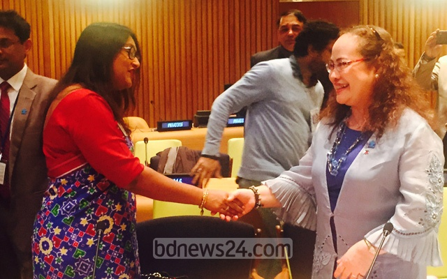

Saima Wazed Putul attending progrom on autism

Introduction
A person with a physical disability is constrained by his physical ability to perform an activity independently such as walking, bathing, toiletting, etc. A person can be physically disabled due to two reasons: Congenital/Hereditary – the person has physical disability since birth or the disability developed at a later stage due to genetic problems, problems with muscle cells or injury during birth. Acquired – the person acquired the physical disability through road or industrial accidents, infections such as polio or diseases and disorders such as stroke or cancer.
Types of Physical Disabilities
There are two major categories under the Physical Disability Group, they are:
Musculo Skeletal Disability
It is defined as the inability to carry out distinctive activities associated with movements of the body parts due to muscular or bony deformities, diseases or degeneration. The disabilities grouped under musculo skeletal disability are:
Loss or Deformity of Limbs
Osteogensis Imperfecta
Muscular Dystrophy
Neuro Musculo Disability
It is defined as the inability to perform controlled movements of affected body parts due to diseases, degeneration or disorder of the nervous system. The categories are:
Cerebral Palsy
Spina Bifida
Poliomyelitis
Stroke
Head Injury
Spinal Cord Injury
Back to top
Details of Musculo Skeletal Disability
Loss or Deformity of Limbs
This may be due to birth defect or may occur due to diseases or accidents. The person may require an artificial limb to compensate the functional loss of activities.
Osteogensis Imperfecta
A defective development of the connective tissues at the growing age that leads to softening of bones and the affected person experiences deformed posture. The person is usually small built with brittle bones. The cause of this condition is unknown but there is a strong hereditary link to it. Such persons are usually active though may require a wheelchair or crutches for mobility.
Muscular Dystrophy
Progressive loss of muscle strength due to a group of hereditary disorders. Muscles around the neck, shoulders and hips are usually more affected than the other muscle groups. Muscles of the respiratory system are also affected at a later stage. With time the affected person’s functional and mobility status deteriorates and may require a wheelchair for mobility.
Back to top
Details of Neuro Musculo Disability
Cerebral Palsy
A group of non-progressive disorders occurring in young children in which damage of the brain causes impairment of motor function. It is caused by birth injury, jaundice and infection. A person with Cerebral Palsy usually has movement and co-ordination problems. The person may have other associated disabilities such as intellectual, behavioral, visual, speech etc. He may need different adaptive equipment and external support for the day to day activities.
Spina Bifida
It is due to development defect of the spinal canal, characterised by incomplete closure of the bony encasement of the spinal cord. It may cause paralysis of the lower part of the body depending on the level and extent of the lesion. The person may loose bowel and bladder control and may have sensory loss at the affected side. This person may require a pair of crutches or wheelchair to move around.
Poliomyelitis
It is an infectious virus disease affecting the lower motor-neuron system. It is caused by the poliovirus and can affect children and adults. It causes weakness in the body and both legs. The person may require mobility aids and external limb supports for the day to day activities. Recently it has been found that many victims of poliomyelitis experience a second decline of their physical and functional status when they reach around the age of forty.
Stroke
It is caused by the interruption of blood supply of the central nervous system or due to hemorrhage inside the brain. The affected person experiences a sudden impairment of the sensory motor functioning of one side of his body. This condition may also associate with other disorders like loss of vision, hearing, speech or intellectual functioning. The person may require a walking stick or wheelchair for mobility.
Head Injury
The extend of this disability depends on the part of the brain involved and the severity of the injury. In most cases it leads to a condition called hemiplegia where the sensory and the motor functions of one side of the body are impaired. It may also be associated with other disabling conditions like impairment of vision, hearing, speech or intellectual functioning.
Spinal Cord Injury – two types of disabilities:
Paraplegia:
Total or partial impairment of the sensory and motor functions in the lower part of the body and lower limbs. In most cases the affected person looses bowel and bladder control and in some occasions experience poor postural control. Depending on the level of injury the affected person may require a crutch, external limb supports or wheelchair for mobility.
Tetraplegia:
Total or partial impairment of the sensory and motor functions of the body including all four limbs. The person looses control over bowel and bladder functions, posture and even in few cases respiratory functioning. The affected person may require different assistive devices to perform daily activities independently.
Back to top
Treatment For Physical Disabilities
Improvement of the disabling condition depends on the cause, type, extend of the disease, disorder or injury. However, in most cases the physical improvement is seen only in the initial few years of disability. There are few conditions that are progressive type and the treatment goal is to maintain their condition. Rehabilitation programmes are planned to help individuals to overcome initial unstable conditions and prevent deterioration of the medical condition. The person should also be more conscious with his diet to avoid further deterioration of his medical condition and recurrent of diseases. More importantly, people with disabilities will learn, through rehabilitation programme, to manage their disabilities confidently. Some of the programmes include:
Occupational Therapy is a specialised treatment programme that prepares the clients to live successfully in his/her own family and society. Through the practice and training of purposeful and goal directed activities and exercises, this treatment programme tries to improve client’s functional abilities and independent living skills.
Physiotherapy is a rehabilitative treatment programme, through the use of physical means such as exercises and electrotherapy that are planned and customised according to the individual client’s need. Examples of the treatment are maintaining and improving the power of the target muscle group, preventing occurrence and progression of contractures and deformities.
Speech Therapy is a specialised treatment and training programme that treats and trains clients to communicate effectively.
Medication/Vaccination may be prescribed by doctor to avoid further deterioration of the physical condition and structural deformities. Vaccination against common virus is an effective way to prevent disabling diseases.
Back to top
Life of a Disabled
Having a physical impairment is not the end of the world. Many people with disabilities live their lives just like any other able-bodied. They enjoy sports, movies, shopping and do a lot of other activities as well. They work as hard as the able-bodied and earn a decent income to support themselves and their families. Some do get married and have children of their own. However, they do need support from their families, friends, members of the public, the community to help them to integrate into the mainstream society by accepting who they are. Giving them opportunities at work and treating them like any able-bodied are some of the ways that can help them to live life to the fullest.